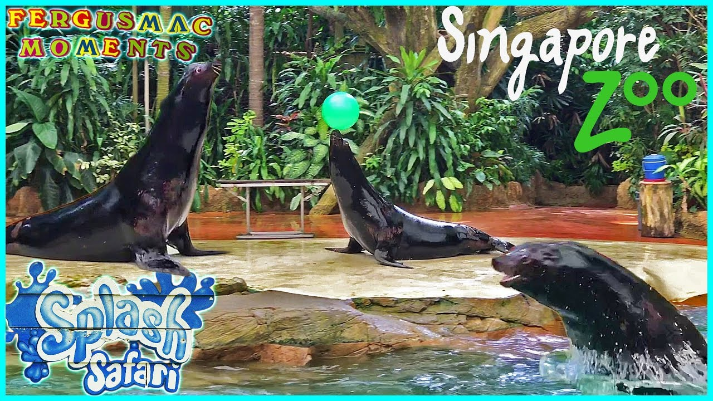
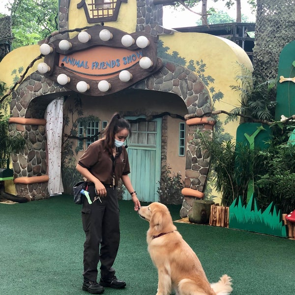
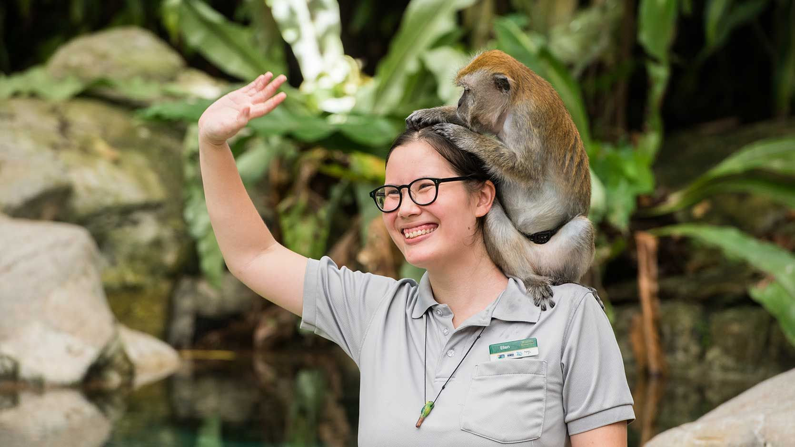
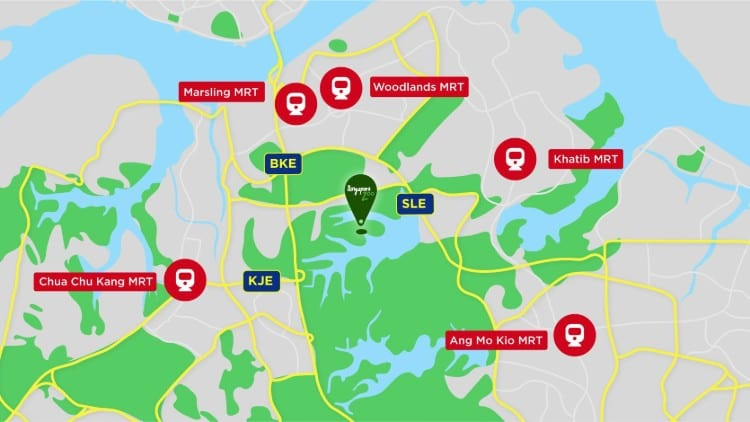
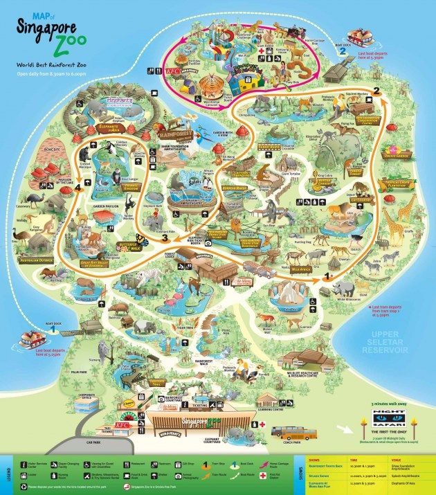

World's Best Rainforest Zoo
Dont know what to do at the Zoo? Fret not, we got you!

Splash Safari Tour
Come see our California sea lion perform and come down to get a big wet surprise at the end!Book here.

Animal Friends Show
Meet your favourite four-legged friends! Real-life Tom and Jerry, best buddy Goofy being Sherlock, these domesticated animals got it all!.Book here.

Rainforest Fights Back Show
In the jungle the mighty jungle...lets embark on a journey to see how these rainforest animals roam... or slither into your hearts!.Book here.
How to make your way to the Singapore Zoo?
Show Times:
Daily at 10.30am and 5.00pm
Location: Shaw Foundation Amphitheatre
Show Times:
Daily at 1.30pm and 4.00pm
Location: Rainforest Kidzworld Amphitheatre
Show Times:
Daily at 12.00pm and 2.30pm
Location: Shaw Foundation Amphitheatre
Navigation
Map:

Address
80 Mandai Lake Rd, 729826
Opening Hours
Monday-Sunday 08.30am - 06.00pm (Last entry 05.00pm)
Transportation
Public Transport: Stop on the North South Line on the MRT and take the respective buses at the respective MRT stations
Mandai Khatib Shuttle (Khatib), 927 (Chua Chu Kang), 138 (Ang Mo Kio)
* Mandai Express is avaliable from the heartlands (Operating on selected weekends and Public Holidays) *
Self Drive: Via Central Expressway (CTE) from the City
1.)Take the CTE toward Seletar Expressway (SLE)
2.)Continue onto SLE towards Mandai Road
3.)Take Exit 8A on SLE onto Mandai Road
4.)Turn left onto Mandai Lake Road
Self Drive: Via Pan Island Expressway (PIE) from the City
1.)Take the PIE toward Bukit Timah Expressway (BKE)
2.)Continue onto BKE toward Woodlands
3.)Take Exit 7 on BKE onto Mandai Road
4.)Turn right onto Mandai Lake Road
Map of the Zoo!
For prominent landmarks of the zoo, refer here!

Social Media